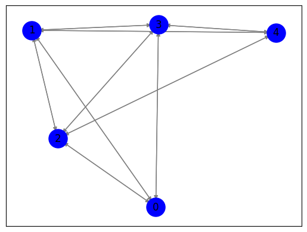

Closeness centrality#
Langkah 1: Crawl data judul berita dan isi berita dari https://okezone.com/#
Sport#
import requests
from bs4 import BeautifulSoup
import pandas as pd
from datetime import date, timedelta
def get_article_content(article_url):
response = requests.get(article_url)
if response.status_code == 200:
soup = BeautifulSoup(response.text, 'html.parser')
article_content = soup.find('div', class_='read').find_all('p')
content = '\n'.join([p.get_text() for p in article_content])
return content
return ""
def scrape_news_data(start_date, end_date):
base_url = "https://sports.okezone.com/indeks?tgl={:02d}&bln={:02d}&thn={:04d}&button=GO"
data = []
current_date = start_date
while current_date <= end_date:
url = base_url.format(current_date.day, current_date.month, current_date.year)
response = requests.get(url)
if response.status_code == 200:
soup = BeautifulSoup(response.text, 'html.parser')
news_elements = soup.find_all('h4', class_='f17')
for element in news_elements:
title = element.a.text
article_url = element.a['href']
content = get_article_content(article_url)
data.append({'Date': current_date.strftime('%d-%m-%Y'), 'Title': title, 'Content': content})
current_date += timedelta(days=1)
else:
print(f"Failed to fetch data for {current_date.strftime('%d-%m-%Y')}")
return data
from datetime import date, timedelta
start_date = date(2023, 10, 1)
end_date = date(2023, 12, 1)
news_data = scrape_news_data(start_date, end_date)
---------------------------------------------------------------------------
KeyboardInterrupt Traceback (most recent call last)
<ipython-input-1-3d36bccf24d7> in <cell line: 46>()
44 end_date = date(2023, 12, 1)
45
---> 46 news_data = scrape_news_data(start_date, end_date)
<ipython-input-1-3d36bccf24d7> in scrape_news_data(start_date, end_date)
30 title = element.a.text
31 article_url = element.a['href']
---> 32 content = get_article_content(article_url)
33
34 data.append({'Date': current_date.strftime('%d-%m-%Y'), 'Title': title, 'Content': content})
<ipython-input-1-3d36bccf24d7> in get_article_content(article_url)
6
7 def get_article_content(article_url):
----> 8 response = requests.get(article_url)
9 if response.status_code == 200:
10 soup = BeautifulSoup(response.text, 'html.parser')
/usr/local/lib/python3.10/dist-packages/requests/api.py in get(url, params, **kwargs)
71 """
72
---> 73 return request("get", url, params=params, **kwargs)
74
75
/usr/local/lib/python3.10/dist-packages/requests/api.py in request(method, url, **kwargs)
57 # cases, and look like a memory leak in others.
58 with sessions.Session() as session:
---> 59 return session.request(method=method, url=url, **kwargs)
60
61
/usr/local/lib/python3.10/dist-packages/requests/sessions.py in request(self, method, url, params, data, headers, cookies, files, auth, timeout, allow_redirects, proxies, hooks, stream, verify, cert, json)
587 }
588 send_kwargs.update(settings)
--> 589 resp = self.send(prep, **send_kwargs)
590
591 return resp
/usr/local/lib/python3.10/dist-packages/requests/sessions.py in send(self, request, **kwargs)
701
702 # Send the request
--> 703 r = adapter.send(request, **kwargs)
704
705 # Total elapsed time of the request (approximately)
/usr/local/lib/python3.10/dist-packages/requests/adapters.py in send(self, request, stream, timeout, verify, cert, proxies)
484
485 try:
--> 486 resp = conn.urlopen(
487 method=request.method,
488 url=url,
/usr/local/lib/python3.10/dist-packages/urllib3/connectionpool.py in urlopen(self, method, url, body, headers, retries, redirect, assert_same_host, timeout, pool_timeout, release_conn, chunked, body_pos, preload_content, decode_content, **response_kw)
789
790 # Make the request on the HTTPConnection object
--> 791 response = self._make_request(
792 conn,
793 method,
/usr/local/lib/python3.10/dist-packages/urllib3/connectionpool.py in _make_request(self, conn, method, url, body, headers, retries, timeout, chunked, response_conn, preload_content, decode_content, enforce_content_length)
535 # Receive the response from the server
536 try:
--> 537 response = conn.getresponse()
538 except (BaseSSLError, OSError) as e:
539 self._raise_timeout(err=e, url=url, timeout_value=read_timeout)
/usr/local/lib/python3.10/dist-packages/urllib3/connection.py in getresponse(self)
459
460 # Get the response from http.client.HTTPConnection
--> 461 httplib_response = super().getresponse()
462
463 try:
/usr/lib/python3.10/http/client.py in getresponse(self)
1373 try:
1374 try:
-> 1375 response.begin()
1376 except ConnectionError:
1377 self.close()
/usr/lib/python3.10/http/client.py in begin(self)
316 # read until we get a non-100 response
317 while True:
--> 318 version, status, reason = self._read_status()
319 if status != CONTINUE:
320 break
/usr/lib/python3.10/http/client.py in _read_status(self)
277
278 def _read_status(self):
--> 279 line = str(self.fp.readline(_MAXLINE + 1), "iso-8859-1")
280 if len(line) > _MAXLINE:
281 raise LineTooLong("status line")
/usr/lib/python3.10/socket.py in readinto(self, b)
703 while True:
704 try:
--> 705 return self._sock.recv_into(b)
706 except timeout:
707 self._timeout_occurred = True
/usr/lib/python3.10/ssl.py in recv_into(self, buffer, nbytes, flags)
1301 "non-zero flags not allowed in calls to recv_into() on %s" %
1302 self.__class__)
-> 1303 return self.read(nbytes, buffer)
1304 else:
1305 return super().recv_into(buffer, nbytes, flags)
/usr/lib/python3.10/ssl.py in read(self, len, buffer)
1157 try:
1158 if buffer is not None:
-> 1159 return self._sslobj.read(len, buffer)
1160 else:
1161 return self._sslobj.read(len)
KeyboardInterrupt:
# Create a pandas DataFrame from the scraped data
df = pd.DataFrame(news_data)
df['Title'] = df['Title'].str.replace('\n', '')
df['Label'] = 'Sport'
df
| Date | Title | Content | Label | |
|---|---|---|---|---|
| 0 | 01-10-2023 | Asapi Francesco Bagn... | ASAPI Francesco Bagnaia di MotoGP Jepang 2023,... | Sport |
| 1 | 01-10-2023 | Permintaan Maaf Eko ... | EKO Yuli Irawan mengucapkan permintaan maafnya... | Sport |
| 2 | 01-10-2023 | MotoGP Jepang 2023: ... | MOTEGI - Marc Marquez girang setelah bisa naik... | Sport |
| 3 | 01-10-2023 | Klasemen Sementara P... | KLASEMEN sementara perolehan medali Asian Game... | Sport |
| 4 | 01-10-2023 | Hasil Asian Games 20... | HASIL Asian Games 2023 akan dibahas di sini. T... | Sport |
| ... | ... | ... | ... | ... |
| 677 | 01-12-2023 | Hasil Syed Modi Inte... | LUCKNOW - Ganda campuran Indonesia, Dejan Ferd... | Sport |
| 678 | 01-12-2023 | POBSI Umumkan Gelar ... | JAKARTA – Persatuan Olahraga Biliar Seluruh I... | Sport |
| 679 | 01-12-2023 | Resmi Menikah, Ini K... | JAKARTA - Jonatan Christie dan Shania Junianat... | Sport |
| 680 | 01-12-2023 | Jadi Tuan Rumah, Ini... | JAKARTA - Gelaran BWF World Tour Finals sudah ... | Sport |
| 681 | 01-12-2023 | Resmi Lepas Masa Laj... | JAKARTA - Pebulutangkis tunggal putra Indonesi... | Sport |
682 rows × 4 columns
# Save the DataFrame to a CSV file
df.to_csv('okezone_sports_news.csv', index=False)
Finance#
def get_article_content(article_url):
response = requests.get(article_url)
if response.status_code == 200:
soup = BeautifulSoup(response.text, 'html.parser')
article_content = soup.find('div', class_='read').find_all('p')
content = '\n'.join([p.get_text() for p in article_content])
return content
return ""
def scrape_news_data(start_date, end_date):
base_url = "https://economy.okezone.com/indeks?tgl={:02d}&bln={:02d}&thn={:04d}&button=GO"
data = []
current_date = start_date
while current_date <= end_date:
url = base_url.format(current_date.day, current_date.month, current_date.year)
response = requests.get(url)
if response.status_code == 200:
soup = BeautifulSoup(response.text, 'html.parser')
news_elements = soup.find_all('h4', class_='f17')
for element in news_elements:
title = element.a.text
article_url = element.a['href']
content = get_article_content(article_url)
data.append({'Date': current_date.strftime('%d-%m-%Y'), 'Title': title, 'Content': content})
current_date += timedelta(days=1)
else:
print(f"Failed to fetch data for {current_date.strftime('%d-%m-%Y')}")
return data
from datetime import date, timedelta
start_date = date(2023, 10, 1)
end_date = date(2023, 12, 1)
news_data_finance = scrape_news_data(start_date, end_date)
# Create a pandas DataFrame from the scraped data
df2 = pd.DataFrame(news_data_finance)
# Save the DataFrame to a CSV file
df2.to_csv('okezone_finance_news.csv', index=False)
df2['Title'] = df2['Title'].str.replace('\t', '')
df2['Content'] = df2['Content'].str.replace('\n', '')
df2['Label'] = 'Finance'
df2['Title'] = df2['Title'].str.replace('\n', '')
df2
| Date | Title | Content | Label | |
|---|---|---|---|---|
| 0 | 01-10-2023 | Bapanas Pastikan Stok Pangan Nasional Aman Jel... | JAKARTA – Bapanas memastikan stok pangan strat... | Finance |
| 1 | 01-10-2023 | Segini Biaya Rehabilitasi Narkoba di Indonesia | JAKARTA - Segini besaran biaya rehabilitasi na... | Finance |
| 2 | 01-10-2023 | Profil dan Kekayaan Ammar Zoni, Artis yang Kem... | JAKARTA - Profil dan kekayaan Ammar Zoni. Arti... | Finance |
| 3 | 01-10-2023 | Kasus Covid Meningkat, Emiten Sarung Tangan (M... | JAKARTA - Emiten cetakan sarung tangan PT Mark... | Finance |
| 4 | 01-10-2023 | Kemenkop UKM Tegaskan Beroperasinya TikTok Sho... | JAKARTA - Kementerian Koperasi dan UKM (KemenK... | Finance |
| ... | ... | ... | ... | ... |
| 615 | 01-12-2023 | Ternyata Begini Pengelolaan Pasokan Batu Bara ... | JAKARTA - Pengelolaan batu bara untuk Pembangk... | Finance |
| 616 | 01-12-2023 | Transaksi Perdagangan Berjangka Komoditi Dipre... | JAKARTA - Indonesia Commodity & Derivatives Ex... | Finance |
| 617 | 01-12-2023 | RUPS, Emiten Helikopter (HELI) Rombak Manajemen | JAKARTA - Emiten persewaan helikopter PT Jaya ... | Finance |
| 618 | 01-12-2023 | PTPP Tunjuk Dhony Rahajoe Jadi Komisaris Utama | JAKARTA - PT PP (Persero) Tbk (PTPP) mengangka... | Finance |
| 619 | 01-12-2023 | Sri Mulyani Bicara Indonesia Jadi High Income ... | JAKARTA - Menteri Keuangan Sri Mulyani Indrawa... | Finance |
620 rows × 4 columns
df2.to_csv('okezone_sports_news.csv', index=False)
Politik#
def get_article_content(article_url):
response = requests.get(article_url)
if response.status_code == 200:
soup = BeautifulSoup(response.text, 'html.parser')
article_content = soup.find('div', class_='read').find_all('p')
content = '\n'.join([p.get_text() for p in article_content])
return content
return ""
def scrape_news_data(start_date, end_date):
base_url = "https://news.okezone.com/indeks/indeks?tgl={:02d}&bln={:02d}&thn={:04d}&button=GO"
data = []
current_date = start_date
while current_date <= end_date:
url = base_url.format(current_date.day, current_date.month, current_date.year)
response = requests.get(url)
if response.status_code == 200:
soup = BeautifulSoup(response.text, 'html.parser')
news_elements = soup.find_all('h4', class_='f17')
for element in news_elements:
title = element.a.text
article_url = element.a['href']
content = get_article_content(article_url)
data.append({'Date': current_date.strftime('%d-%m-%Y'), 'Title': title, 'Content': content})
current_date += timedelta(days=1)
else:
print(f"Failed to fetch data for {current_date.strftime('%d-%m-%Y')}")
return data
from datetime import date, timedelta
start_date = date(2023, 10, 1)
end_date = date(2023, 12, 1)
news_data_politik = scrape_news_data(start_date, end_date)
# Create a pandas DataFrame from the scraped data
df3 = pd.DataFrame(news_data_finance)
df3['Title'] = df3['Title'].str.replace('\t', '')
df3['Content'] = df3['Content'].str.replace('\n', '')
df3['Label'] = 'Politik'
df3['Title'] = df3['Title'].str.replace('\n', '')
df3
| Date | Title | Content | Label | |
|---|---|---|---|---|
| 0 | 01-10-2023 | Bapanas Pastikan Stok Pangan Nasional Aman Jel... | JAKARTA – Bapanas memastikan stok pangan strat... | Politik |
| 1 | 01-10-2023 | Segini Biaya Rehabilitasi Narkoba di Indonesia | JAKARTA - Segini besaran biaya rehabilitasi na... | Politik |
| 2 | 01-10-2023 | Profil dan Kekayaan Ammar Zoni, Artis yang Kem... | JAKARTA - Profil dan kekayaan Ammar Zoni. Arti... | Politik |
| 3 | 01-10-2023 | Kasus Covid Meningkat, Emiten Sarung Tangan (M... | JAKARTA - Emiten cetakan sarung tangan PT Mark... | Politik |
| 4 | 01-10-2023 | Kemenkop UKM Tegaskan Beroperasinya TikTok Sho... | JAKARTA - Kementerian Koperasi dan UKM (KemenK... | Politik |
| ... | ... | ... | ... | ... |
| 615 | 01-12-2023 | Ternyata Begini Pengelolaan Pasokan Batu Bara ... | JAKARTA - Pengelolaan batu bara untuk Pembangk... | Politik |
| 616 | 01-12-2023 | Transaksi Perdagangan Berjangka Komoditi Dipre... | JAKARTA - Indonesia Commodity & Derivatives Ex... | Politik |
| 617 | 01-12-2023 | RUPS, Emiten Helikopter (HELI) Rombak Manajemen | JAKARTA - Emiten persewaan helikopter PT Jaya ... | Politik |
| 618 | 01-12-2023 | PTPP Tunjuk Dhony Rahajoe Jadi Komisaris Utama | JAKARTA - PT PP (Persero) Tbk (PTPP) mengangka... | Politik |
| 619 | 01-12-2023 | Sri Mulyani Bicara Indonesia Jadi High Income ... | JAKARTA - Menteri Keuangan Sri Mulyani Indrawa... | Politik |
620 rows × 4 columns
# Save the DataFrame to a CSV file
df3.to_csv('okezone_politik_news.csv', index=False)
Gabungkan Data#
combined_df = pd.concat([df, df2, df3], ignore_index=True)
combined_df
| Date | Title | Content | Label | |
|---|---|---|---|---|
| 0 | 01-10-2023 | Asapi Francesco Bagn... | ASAPI Francesco Bagnaia di MotoGP Jepang 2023,... | Sport |
| 1 | 01-10-2023 | Permintaan Maaf Eko ... | EKO Yuli Irawan mengucapkan permintaan maafnya... | Sport |
| 2 | 01-10-2023 | MotoGP Jepang 2023: ... | MOTEGI - Marc Marquez girang setelah bisa naik... | Sport |
| 3 | 01-10-2023 | Klasemen Sementara P... | KLASEMEN sementara perolehan medali Asian Game... | Sport |
| 4 | 01-10-2023 | Hasil Asian Games 20... | HASIL Asian Games 2023 akan dibahas di sini. T... | Sport |
| ... | ... | ... | ... | ... |
| 1917 | 01-12-2023 | Ternyata Begini Pengelolaan Pasokan Batu Bara ... | JAKARTA - Pengelolaan batu bara untuk Pembangk... | Politik |
| 1918 | 01-12-2023 | Transaksi Perdagangan Berjangka Komoditi Dipre... | JAKARTA - Indonesia Commodity & Derivatives Ex... | Politik |
| 1919 | 01-12-2023 | RUPS, Emiten Helikopter (HELI) Rombak Manajemen | JAKARTA - Emiten persewaan helikopter PT Jaya ... | Politik |
| 1920 | 01-12-2023 | PTPP Tunjuk Dhony Rahajoe Jadi Komisaris Utama | JAKARTA - PT PP (Persero) Tbk (PTPP) mengangka... | Politik |
| 1921 | 01-12-2023 | Sri Mulyani Bicara Indonesia Jadi High Income ... | JAKARTA - Menteri Keuangan Sri Mulyani Indrawa... | Politik |
1922 rows × 4 columns
combined_df['Label'].value_counts()
Sport 682
Finance 620
Politik 620
Name: Label, dtype: int64
# Save the DataFrame to a CSV file
combined_df.to_csv('data_label_news.csv', index=False)
combined_df.to_excel('data_label_news.xlsx', index=False)
combined_df
| Date | Title | Content | Label | |
|---|---|---|---|---|
| 0 | 01-10-2023 | Asapi Francesco Bagn... | ASAPI Francesco Bagnaia di MotoGP Jepang 2023,... | Sport |
| 1 | 01-10-2023 | Permintaan Maaf Eko ... | EKO Yuli Irawan mengucapkan permintaan maafnya... | Sport |
| 2 | 01-10-2023 | MotoGP Jepang 2023: ... | MOTEGI - Marc Marquez girang setelah bisa naik... | Sport |
| 3 | 01-10-2023 | Klasemen Sementara P... | KLASEMEN sementara perolehan medali Asian Game... | Sport |
| 4 | 01-10-2023 | Hasil Asian Games 20... | HASIL Asian Games 2023 akan dibahas di sini. T... | Sport |
| ... | ... | ... | ... | ... |
| 1917 | 01-12-2023 | Ternyata Begini Pengelolaan Pasokan Batu Bara ... | JAKARTA - Pengelolaan batu bara untuk Pembangk... | Politik |
| 1918 | 01-12-2023 | Transaksi Perdagangan Berjangka Komoditi Dipre... | JAKARTA - Indonesia Commodity & Derivatives Ex... | Politik |
| 1919 | 01-12-2023 | RUPS, Emiten Helikopter (HELI) Rombak Manajemen | JAKARTA - Emiten persewaan helikopter PT Jaya ... | Politik |
| 1920 | 01-12-2023 | PTPP Tunjuk Dhony Rahajoe Jadi Komisaris Utama | JAKARTA - PT PP (Persero) Tbk (PTPP) mengangka... | Politik |
| 1921 | 01-12-2023 | Sri Mulyani Bicara Indonesia Jadi High Income ... | JAKARTA - Menteri Keuangan Sri Mulyani Indrawa... | Politik |
1922 rows × 4 columns
combined_df['Content']
0 ASAPI Francesco Bagnaia di MotoGP Jepang 2023,...
1 EKO Yuli Irawan mengucapkan permintaan maafnya...
2 MOTEGI - Marc Marquez girang setelah bisa naik...
3 KLASEMEN sementara perolehan medali Asian Game...
4 HASIL Asian Games 2023 akan dibahas di sini. T...
...
1917 JAKARTA - Pengelolaan batu bara untuk Pembangk...
1918 JAKARTA - Indonesia Commodity & Derivatives Ex...
1919 JAKARTA - Emiten persewaan helikopter PT Jaya ...
1920 JAKARTA - PT PP (Persero) Tbk (PTPP) mengangka...
1921 JAKARTA - Menteri Keuangan Sri Mulyani Indrawa...
Name: Content, Length: 1922, dtype: object
Langkah 2: Meringkas Fitur Content(Spacy)#
import pandas as pd
data = pd.read_csv("/content/drive/MyDrive/ppw/tugas/data_tugas4/data_label_news.csv")
data
| Date | Title | Content | Label | |
|---|---|---|---|---|
| 0 | 01-10-2023 | Asapi Francesco Bagn... | ASAPI Francesco Bagnaia di MotoGP Jepang 2023,... | Sport |
| 1 | 01-10-2023 | Permintaan Maaf Eko ... | EKO Yuli Irawan mengucapkan permintaan maafnya... | Sport |
| 2 | 01-10-2023 | MotoGP Jepang 2023: ... | MOTEGI - Marc Marquez girang setelah bisa naik... | Sport |
| 3 | 01-10-2023 | Klasemen Sementara P... | KLASEMEN sementara perolehan medali Asian Game... | Sport |
| 4 | 01-10-2023 | Hasil Asian Games 20... | HASIL Asian Games 2023 akan dibahas di sini. T... | Sport |
| ... | ... | ... | ... | ... |
| 987 | 01-11-2023 | Segini Besaran Uang Makan dan Uang Lauk Pauk P... | JAKARTA - Segini besaran uang makan dan uang l... | Politik |
| 988 | 01-11-2023 | Aturan RPP Kesehatan Bakal Picu Peredaran Roko... | JAKARTA – Aturan Rancangan Peraturan Pemerinta... | Politik |
| 989 | 01-11-2023 | Mentan: Cukup Pakai KTP Petani Dapat Pupuk Sub... | JAKARTA - Menteri Pertanian Amran Sulaiman men... | Politik |
| 990 | 01-11-2023 | Ganjar Ingin Masyarakat Rasakan Dampak Langsun... | JAKARTA - Calon Presiden Partai Perindo Ganjar... | Politik |
| 991 | 01-11-2023 | Mengintip Harta Karun Migas di Jabanusa, Bisa ... | JAKARTA - SKK Migas menyatakan potensi harta k... | Politik |
992 rows × 4 columns
# Impor pustaka spaCy
import spacy
# Memuat model bahasa Inggris spaCy
nlp = spacy.load("en_core_web_sm")
# Berikan berita yang ingin diringkas
berita = data['Content'].iloc[900]
# Analisis teks menggunakan spaCy
doc = nlp(berita)
# Meringkas teks dengan mengekstrak kalimat-kalimat utama
kalimat_utama = [kalimat.text for kalimat in doc.sents]
ringkasan = " ".join(kalimat_utama[:5])
# Cetak ringkasan
print(ringkasan)
JAKARTA - Calon Presiden Partai Perindo Ganjar Pranowo menilai pembangunan infrastruktur harus memberikan manfaat langsung terutama bagi masyarakat di daerah terdampak pembangunan. Salah satu manfaat yang secara nyata dapat dirasakan langsung bagi masyarakat dengan memberikan kepemilikan saham korporasi maupun anak usaha kepada Badan Usaha Milik Desa (BUMDes) di desa terdampak proyek infrastruktur. BACA JUGA:Ganjar Pranowo Optimistis Bawa Ekonomi Indonesia Tumbuh 7%, Ini Strateginya"Kalau umpama membuat jalan tol, kita tawarkan saja, anda mau ganti rugi dibayar, atau mau dikonversi menjadi saham, sehingga demokrasi ekonominya kita berikan kepada mereka tanpa kemudian meninggalkan mereka," kata Ganjar, dalam acara Sarasehan 100 Ekonom Indonesia, Rabu (8/11/2023).Ganjar menceritakan, ketika itu ada proyek pembangunan pabrik semen di Rembang yang banyak ditentang masyarakat setempat. Namun setelah dilakukan negosiasi terhadap perusahaan untuk setidaknya memberikan saham kepada masyarakat melalui BUMDes. Akhirnya lobi-lobi itu berhasil dan membuat 6 BUMDes di sekitar Rembang menjadi pemegang saham dari anak usaha pabrik semen tersebut.
Langkah 3: TF IDF#
import nltk
nltk.download('punkt')
from nltk.tokenize import sent_tokenize
from sklearn.feature_extraction.text import TfidfVectorizer
[nltk_data] Downloading package punkt to /root/nltk_data...
[nltk_data] Unzipping tokenizers/punkt.zip.
kalimat = nltk.sent_tokenize(ringkasan)
tfidf_vectorizer = TfidfVectorizer()
tfidf_matrix = tfidf_vectorizer.fit_transform(kalimat)
terms = tfidf_vectorizer.get_feature_names_out()
for i, sentence in enumerate(kalimat):
print(f"\nKalimat {i+1}: {sentence}")
Kalimat 1: JAKARTA - Calon Presiden Partai Perindo Ganjar Pranowo menilai pembangunan infrastruktur harus memberikan manfaat langsung terutama bagi masyarakat di daerah terdampak pembangunan.
Kalimat 2: Salah satu manfaat yang secara nyata dapat dirasakan langsung bagi masyarakat dengan memberikan kepemilikan saham korporasi maupun anak usaha kepada Badan Usaha Milik Desa (BUMDes) di desa terdampak proyek infrastruktur.
Kalimat 3: BACA JUGA:Ganjar Pranowo Optimistis Bawa Ekonomi Indonesia Tumbuh 7%, Ini Strateginya"Kalau umpama membuat jalan tol, kita tawarkan saja, anda mau ganti rugi dibayar, atau mau dikonversi menjadi saham, sehingga demokrasi ekonominya kita berikan kepada mereka tanpa kemudian meninggalkan mereka," kata Ganjar, dalam acara Sarasehan 100 Ekonom Indonesia, Rabu (8/11/2023).Ganjar menceritakan, ketika itu ada proyek pembangunan pabrik semen di Rembang yang banyak ditentang masyarakat setempat.
Kalimat 4: Namun setelah dilakukan negosiasi terhadap perusahaan untuk setidaknya memberikan saham kepada masyarakat melalui BUMDes.
Kalimat 5: Akhirnya lobi-lobi itu berhasil dan membuat 6 BUMDes di sekitar Rembang menjadi pemegang saham dari anak usaha pabrik semen tersebut.
Langkah 4: Cosine Similarity#
from sklearn.metrics.pairwise import cosine_similarity
import networkx as nx
import matplotlib.pyplot as plt
cosine_similarities = cosine_similarity(tfidf_matrix, tfidf_matrix)
for i in range(len(kalimat)):
for j in range(i+1, len(kalimat)):
similarity = cosine_similarities[i][j]
print(f"Similarity Kalimat {i+1} dan Kalimat {j+1}: {similarity:.4f}")
Similarity Kalimat 1 dan Kalimat 2: 0.2044
Similarity Kalimat 1 dan Kalimat 3: 0.1291
Similarity Kalimat 1 dan Kalimat 4: 0.0557
Similarity Kalimat 1 dan Kalimat 5: 0.0184
Similarity Kalimat 2 dan Kalimat 3: 0.0624
Similarity Kalimat 2 dan Kalimat 4: 0.1170
Similarity Kalimat 2 dan Kalimat 5: 0.1429
Similarity Kalimat 3 dan Kalimat 4: 0.0386
Similarity Kalimat 3 dan Kalimat 5: 0.1289
Similarity Kalimat 4 dan Kalimat 5: 0.0556
similarity_df = pd.DataFrame(cosine_similarities, columns=range(len(kalimat)), index=range(len(kalimat)))
similarity_df
| 0 | 1 | 2 | 3 | 4 | |
|---|---|---|---|---|---|
| 0 | 1.000000 | 0.204444 | 0.129065 | 0.055662 | 0.018382 |
| 1 | 0.204444 | 1.000000 | 0.062433 | 0.116960 | 0.142893 |
| 2 | 0.129065 | 0.062433 | 1.000000 | 0.038591 | 0.128888 |
| 3 | 0.055662 | 0.116960 | 0.038591 | 1.000000 | 0.055586 |
| 4 | 0.018382 | 0.142893 | 0.128888 | 0.055586 | 1.000000 |
Langkah 5: Graph#
G = nx.DiGraph()
for i in range(len(cosine_similarities)):
G.add_node(i)
for i in range(len(cosine_similarities)):
for j in range(len(cosine_similarities)):
similarity = cosine_similarities[i][j]
if similarity > 0.02 and i != j:
G.add_edge(i, j)
pos = nx.spring_layout(G)
nx.draw_networkx_nodes(G, pos, node_size=500, node_color='b')
nx.draw_networkx_edges(G, pos, edge_color='gray', arrows=True)
nx.draw_networkx_labels(G, pos)
plt.show()

Langkah 6: Closeness Centrality#
closeness_centrality = nx.closeness_centrality(G)
sorted_closeness = sorted(closeness_centrality.items(), key=lambda x: x[1], reverse=True)
print("\nSorted Closeness Centrality:")
for node, closeness in sorted_closeness:
print(f"Node {node}: {closeness:.4f}")
Sorted Closeness Centrality:
Node 1: 1.0000
Node 2: 1.0000
Node 3: 1.0000
Node 0: 0.8000
Node 4: 0.8000
print("\nNode Tertinggi dengan Kalimat:")
for node, closeness in sorted_closeness[:3]:
top_sentence = kalimat[node]
print(f"Node {node}: Closeness Centrality = {closeness:.4f}")
print(f"Kalimat: {top_sentence}\n")
Node Tertinggi dengan Kalimat:
Node 1: Closeness Centrality = 1.0000
Kalimat: Salah satu manfaat yang secara nyata dapat dirasakan langsung bagi masyarakat dengan memberikan kepemilikan saham korporasi maupun anak usaha kepada Badan Usaha Milik Desa (BUMDes) di desa terdampak proyek infrastruktur.
Node 2: Closeness Centrality = 1.0000
Kalimat: BACA JUGA:Ganjar Pranowo Optimistis Bawa Ekonomi Indonesia Tumbuh 7%, Ini Strateginya"Kalau umpama membuat jalan tol, kita tawarkan saja, anda mau ganti rugi dibayar, atau mau dikonversi menjadi saham, sehingga demokrasi ekonominya kita berikan kepada mereka tanpa kemudian meninggalkan mereka," kata Ganjar, dalam acara Sarasehan 100 Ekonom Indonesia, Rabu (8/11/2023).Ganjar menceritakan, ketika itu ada proyek pembangunan pabrik semen di Rembang yang banyak ditentang masyarakat setempat.
Node 3: Closeness Centrality = 1.0000
Kalimat: Namun setelah dilakukan negosiasi terhadap perusahaan untuk setidaknya memberikan saham kepada masyarakat melalui BUMDes.
Ringkas Semua Isi Berita#
import spacy
import pandas as pd
# Memuat model bahasa Inggris spaCy
nlp = spacy.load("en_core_web_sm")
# Inisialisasi DataFrame kosong untuk menyimpan ringkasan
df_ringkasan = pd.DataFrame(columns=['Ringkasan'])
# Loop untuk setiap baris data
for i in range(992):
# Inisialisasi teks yang akan diringkas
teks_ringkasan = data['Content'].iloc[i]
# Analisis teks menggunakan spaCy
doc = nlp(teks_ringkasan)
# Ambil setiap kalimat dari dokumen
kalimat_utama = [kalimat.text for kalimat in doc.sents]
# Gabungkan beberapa kalimat sesuai kebutuhan Anda
jumlah_kalimat = 10
data_ringkas = " ".join(kalimat_utama[:jumlah_kalimat])
# Tambahkan ringkasan ke DataFrame
df_ringkasan = pd.concat([df_ringkasan, pd.DataFrame({'Ringkasan': [data_ringkas]})], ignore_index=True)
df_ringkasan
| Ringkasan | |
|---|---|
| 0 | ASAPI Francesco Bagnaia di MotoGP Jepang 2023,... |
| 1 | EKO Yuli Irawan mengucapkan permintaan maafnya... |
| 2 | MOTEGI - Marc Marquez girang setelah bisa naik... |
| 3 | KLASEMEN sementara perolehan medali Asian Game... |
| 4 | HASIL Asian Games 2023 akan dibahas di sini. T... |
| ... | ... |
| 987 | JAKARTA - Segini besaran uang makan dan uang l... |
| 988 | JAKARTA – Aturan Rancangan Peraturan Pemerinta... |
| 989 | JAKARTA - Menteri Pertanian Amran Sulaiman men... |
| 990 | JAKARTA - Calon Presiden Partai Perindo Ganjar... |
| 991 | JAKARTA - SKK Migas menyatakan potensi harta k... |
992 rows × 1 columns
# Save the DataFrame to a CSV file
df_ringkasan.to_csv('df_ringkasan.csv', index=False)
Model#
from sklearn.model_selection import train_test_split
from sklearn.naive_bayes import GaussianNB
from sklearn.metrics import accuracy_score
# Inisialisasi TfidfVectorizer
tfidf_vectorizer = TfidfVectorizer()
# Fit dan transform data ringkasan
tfidf_matrix = tfidf_vectorizer.fit_transform(df_ringkasan['Ringkasan'])
# Dapatkan nama fitur (kata) yang sesuai dengan indeks matriks
fitur_kata = tfidf_vectorizer.get_feature_names_out()
# Buat DataFrame untuk menyimpan hasil TF-IDF
df_tfidf = pd.DataFrame(data=tfidf_matrix.toarray(), columns=fitur_kata)
# Tampilkan DataFrame hasil TF-IDF
print(df_tfidf)
00 000 000cc 03 04 05 065 07 08 09 ... zhongyi zhu \
0 0.0 0.0 0.0 0.0 0.0 0.0 0.0 0.0 0.0 0.0 ... 0.0 0.0
1 0.0 0.0 0.0 0.0 0.0 0.0 0.0 0.0 0.0 0.0 ... 0.0 0.0
2 0.0 0.0 0.0 0.0 0.0 0.0 0.0 0.0 0.0 0.0 ... 0.0 0.0
3 0.0 0.0 0.0 0.0 0.0 0.0 0.0 0.0 0.0 0.0 ... 0.0 0.0
4 0.0 0.0 0.0 0.0 0.0 0.0 0.0 0.0 0.0 0.0 ... 0.0 0.0
.. ... ... ... ... ... ... ... ... ... ... ... ... ...
987 0.0 0.0 0.0 0.0 0.0 0.0 0.0 0.0 0.0 0.0 ... 0.0 0.0
988 0.0 0.0 0.0 0.0 0.0 0.0 0.0 0.0 0.0 0.0 ... 0.0 0.0
989 0.0 0.0 0.0 0.0 0.0 0.0 0.0 0.0 0.0 0.0 ... 0.0 0.0
990 0.0 0.0 0.0 0.0 0.0 0.0 0.0 0.0 0.0 0.0 ... 0.0 0.0
991 0.0 0.0 0.0 0.0 0.0 0.0 0.0 0.0 0.0 0.0 ... 0.0 0.0
zhuhai zigi zii zilberman zinedine zion zona zu
0 0.0 0.0 0.0 0.0 0.0 0.0 0.0 0.0
1 0.0 0.0 0.0 0.0 0.0 0.0 0.0 0.0
2 0.0 0.0 0.0 0.0 0.0 0.0 0.0 0.0
3 0.0 0.0 0.0 0.0 0.0 0.0 0.0 0.0
4 0.0 0.0 0.0 0.0 0.0 0.0 0.0 0.0
.. ... ... ... ... ... ... ... ...
987 0.0 0.0 0.0 0.0 0.0 0.0 0.0 0.0
988 0.0 0.0 0.0 0.0 0.0 0.0 0.0 0.0
989 0.0 0.0 0.0 0.0 0.0 0.0 0.0 0.0
990 0.0 0.0 0.0 0.0 0.0 0.0 0.0 0.0
991 0.0 0.0 0.0 0.0 0.0 0.0 0.0 0.0
[992 rows x 6093 columns]
LDA#
from sklearn.decomposition import LatentDirichletAllocation
lda = LatentDirichletAllocation(n_components=5, doc_topic_prior=0.2, topic_word_prior=0.1, random_state=42, max_iter=1)
lda_top = lda.fit_transform(df_tfidf)
# Membuat DataFrame dari hasil LDA
df_lda_top = pd.DataFrame(data=lda_top, columns=["Topic_1", "Topic_2", "Topic_3", "Topic_4", "Topic_5"])
df_lda_top
| Topic_1 | Topic_2 | Topic_3 | Topic_4 | Topic_5 | |
|---|---|---|---|---|---|
| 0 | 0.020388 | 0.919136 | 0.019985 | 0.019923 | 0.020567 |
| 1 | 0.910171 | 0.022742 | 0.022260 | 0.022503 | 0.022325 |
| 2 | 0.023274 | 0.023159 | 0.022761 | 0.022884 | 0.907922 |
| 3 | 0.021853 | 0.021794 | 0.021504 | 0.913308 | 0.021541 |
| 4 | 0.025906 | 0.900387 | 0.023720 | 0.024484 | 0.025502 |
| ... | ... | ... | ... | ... | ... |
| 987 | 0.021001 | 0.021150 | 0.915716 | 0.021178 | 0.020955 |
| 988 | 0.025523 | 0.898007 | 0.025556 | 0.025482 | 0.025433 |
| 989 | 0.024780 | 0.900454 | 0.024692 | 0.025036 | 0.025039 |
| 990 | 0.019884 | 0.019883 | 0.019650 | 0.920857 | 0.019726 |
| 991 | 0.019563 | 0.019451 | 0.019557 | 0.019485 | 0.921945 |
992 rows × 5 columns
Naive bayes#
y=data['Label']
X_train,X_test,y_train,y_test = train_test_split(df_lda_top,y,test_size=0.2,random_state=42)
NB = GaussianNB()
gaus=NB.fit(X_train, y_train)
y_pred = gaus.predict(X_test)
accuracy = accuracy_score(y_test, y_pred)
print(f'Akurasi: {accuracy}')
Akurasi: 0.4371859296482412
Metode KNN#
from sklearn.neighbors import KNeighborsClassifier
# Inisialisasi KNeighborsClassifier
knn = KNeighborsClassifier(n_neighbors=3)
# Melatih model KNN
knn.fit(X_train, y_train)
# Melakukan prediksi pada data uji
y_pred = knn.predict(X_test)
# Mengukur akurasi model
akurasi = accuracy_score(y_test, y_pred)
print("Akurasi KNN:", akurasi)
Akurasi KNN: 0.6532663316582915
Metode Decission Tree#
from sklearn.tree import DecisionTreeClassifier
# Inisialisasi DecisionTreeClassifier
decision_tree = DecisionTreeClassifier(random_state=42)
# Melatih model Decision Tree
decision_tree.fit(X_train, y_train)
# Melakukan prediksi pada data uji
y_pred = decision_tree.predict(X_test)
# Mengukur akurasi model
akurasi = accuracy_score(y_test, y_pred)
print("Akurasi Decision Tree:", akurasi)
Akurasi Decision Tree: 0.5879396984924623
Tanpa LDA#
Naive Bayes#
y=data['Label']
X_train,X_test,y_train,y_test = train_test_split(df_tfidf,y,test_size=0.2,random_state=42)
NB = GaussianNB()
gaus=NB.fit(X_train, y_train)
y_pred = gaus.predict(X_test)
accuracy = accuracy_score(y_test, y_pred)
print(f'Akurasi: {accuracy}')
Akurasi: 0.592964824120603
Metode KNN#
from sklearn.neighbors import KNeighborsClassifier
# Inisialisasi KNeighborsClassifier
knn = KNeighborsClassifier(n_neighbors=3)
# Melatih model KNN
knn.fit(X_train, y_train)
# Melakukan prediksi pada data uji
y_pred = knn.predict(X_test)
# Mengukur akurasi model
akurasi = accuracy_score(y_test, y_pred)
print("Akurasi KNN:", akurasi)
Akurasi KNN: 0.7085427135678392
Metode Decission Tree#
from sklearn.tree import DecisionTreeClassifier
# Inisialisasi DecisionTreeClassifier
decision_tree = DecisionTreeClassifier(random_state=42)
# Melatih model Decision Tree
decision_tree.fit(X_train, y_train)
# Melakukan prediksi pada data uji
y_pred = decision_tree.predict(X_test)
# Mengukur akurasi model
akurasi = accuracy_score(y_test, y_pred)
print("Akurasi Decision Tree:", akurasi)
Akurasi Decision Tree: 0.592964824120603
Kesimpulan#
Model tertinggi menggunakan metode KNN tanpa menggunakan LDA yaitu diangka 71%
Data ini tidak cocok untuk dilakukan reduksi dimensi karena alih alih menambah tingkat akurasi, ini malah menurunkan tingkat akurasi